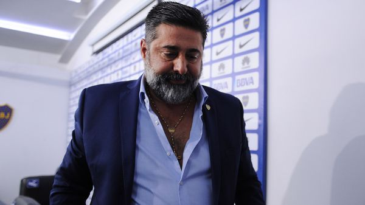

Real Chubut - Agencia de Noticias


La historia detrás del supuesto veto de la Conmebol a Daniel Angelici

Desde el suceso del gas pimienta, la relación entre el presidente de Boca y el ente situado en Asunción se quebró. El paso a paso desde aquella fatídica noche hasta la filtración de su veto para un cargo.
El posible veto a Daniel Angelici desde la Conmebol para ocupar un cargo internacional tiene ribetes que exponen una relación tirante entre las partes involucradas en este suceso. Un manifiesto conflicto entre el vicepresidente 1° de AFA y el presidente de la Conmebol, Alejandro Domínguez, pone sobre la superficie una problemática que excede el hecho reciente en sí.
La génesis de la enemistad entre la Conmebol y el presidente de Boca podría situarse el 14 de mayo del 2015, cuando el Superclásico por Copa Libertadores no pudo terminar por la agresión con gas pimienta a futbolistas de River en la Bombonera. Apenas 48 horas más tarde, tras recibir al abogado Ignacio Villarroel que representó al Millonario, la Conmebol decidió descalificar al Xeneize del certamen e imponerle otras sanciones sin darle derecho a una defensa legítima.
Unos pocos meses después, Angelici encabezó un movimiento que fue percibido desde Asunción como una contrafoensiva: formó la Liga Sudamericanaacompañado por 15 importantes clubes de Sudamérica –entre los que se encontraba River– con la intención de defender los intereses de las instituciones ante la Conmebol y la distribución de premios por la participación en torneos internacionales. Seis meses más tarde, el máximo directivo de Boca fue elegido como presidente con la aclamación de todos los presentes, menos el club de Núñez.
Esa nueva organización de los principales clubes del cono sur de este lado del mundo le costó muy caro a la Conmebol, que incrementó los premios de la Copa Sudamericana y Copa Libertadores en un porcentaje superior al 70% para apaciguar el foco de conflicto.
La Sudamericana otorgó USD 31,8 millones en 2016: 13 millones de más en comparación al 2015. El incremento en la Libertadores fue todavía más significativo ya que también eliminó el cobro del 10% de la recaudación bruta de cada partido. "Estas medidas responden a una solicitud presentada a la Confederación a fines de enero por los clubes cabeza de serie de la Libertadores", reconocieron en el comunicado oficial.
"Prácticamente se están duplicando los premios", analizó por entonces el presidente de Peñarol de Uruguay, Juan Pedro Damiani, que pocos días antes había sido impulsor del nacimiento de la Liga Sudamericana.
Las pérdidas en términos económicos para la Conmebol fueron incalculables. A raíz de esto, el inicio de la era del paraguayo Alejandro Domínguez al frente del ente que regula a los clubes de fútbol sudamericanos fue con un dilema económico y escaso capital político.
Domínguez llegó en enero del 2016 al máximo cargo de Conmebol para suceder a tres presidentes manchados por la corrupción. El paraguayo Nicolás Leoz inició el proceso de recambio al ser conminado a dejar su cargo en abril del 2013 señalado como uno de los directivos que malversó fondos de la FIFA y recibió dinero para apoyar la candidatura de Qatar al Mundial 2022. Su sucesor fue el uruguayo Eugenio Figueredo, quien apenas un año más tarde también dimitió y actualmente se encuentra con prisión domiciliaria al estar implicado en el caso del FIFA Gate.
El paraguayo Juan Ángel Napout, mentor de Domínguez en la federeación guaraní, tomó las riendas de la Conmebol pero sin mejor suerte que los anteriores dirigentes: apenas un año más tarde puso su renuncia a disposición del cargoprincipal a las pocas horas de ser detenido por el FIFA Gate.
En un tablero político adverso, la rencilla entre Domínguez y Angelici fue creciendo a punto tal de cruzarse críticas públicas. "Veo a Domínguez con una gran soberbia. No respetó a Argentina", sentenció el dirigente argentino sobre el paraguayo tras un cambio en el formato de juego de la Libertadores.
El siguiente movimiento se desarrolló en el predio de Ezeiza con la creación del nuevo estatuto de AFA. Angelici propuso al Colegio de Abogados de la Ciudad de Buenos Aires como encargado de tomar el examen de ética de los candidatos, entre los que se encontraba él, y FIFA lo rechazó: serían los integrantes de la Comisión de Gobernanza & Transparencia de Conmebol los apoderados de esa tarea.
A esa obligación debieron someterse Claudio Tapia, Hugo Moyano, Guillermo Raed y el propio Angelici por ser las cabezas de la nueva gestión de AFA elegida en marzo de este año. El examen fue a distancia con dos parámetros: averiguación de antecedentes y la respuesta de un cuestionario un tanto curioso, según pudo averiguar Infobae, con preguntas tales como: "¿Usted conspiraría contra la Conmebol o la FIFA?".
La definición que tomaría ese órgano sería confidencial y sólo se le comunicaría a los implicados. Sin embargo, en las últimas horas hubo una filtración llamativa a más de tres meses de realizarse los tests: Angelici habría sido vetado para ocupar un rol en cualquier entidad internacional, pero no para ser vicepresidente de la AFA.
Los motivos que surgen desde esa filtración para argumentar esta decisión son tres: ser un empresario de juegos de azar, las escuchas telefónicas que se filtraron dialogando sobre actuaciones arbitrales y la denuncia de la diputada Elisa Carrio en la que lo acusa de ser un "operador judicial".
En dos de esos tres puntos, la evaluación hasta aquí resulta cuanto menos arbitraria: las escuchas no tienen carácter judicial y fueron hechas de manera ilegal; mientras que la denuncia de Carrio en sí misma carece de sustento por cuanto Angelici será inocente –tal como se declara– hasta que la Justicia demuestre lo contrario.
Al mismo tiempo, carecería de lógica permitirle a Angelici ocupar un puesto de alto rango en una afiliada de Conmebol como lo es la AFA y no ser parte de la Conmebol o de FIFA, teniendo en cuenta que las dos instituciones realizaron sus Estatutos bajo la doctrina que FIFA impuso en los últimos meses y con los mismos parámetros de exigencia ética.
Angelici, que en ningún momento hizo una presentación para candidato de un ente internacional, recibió esta información de manera extraoficial. A su casilla lo único que ingresó fue un aviso de que debía completar un formulario en caso de pretender estar en un rol fuera de Argentina.
La situación llegó a tal punto que desde la AFA decidieron publicar un comunicado apoyando al vicepresidente 1°: "En virtud de la resolución de la Subcomisión de Control de Conmebol relativa al examen de idoneidad del Dr. Daniel Angelici, que es de público conocimiento, el Comité Ejecutivo de la Asociación del Fútbol Argentino expresa su respaldo y acompañamiento en los procesos que decida iniciar tendientes a revertir la situación descripta".
El tema de las "filtraciones" en la Conmebol genera resquemor en algunos sectores –y acerca posturas en Argentina– luego de que River también haya sido damnificado por esto con los casos de doping masivo: se lanzó extraoficialmente que el número ascendía a siete, cuando la información oficial sólo terminó involucrando a dos futbolistas en una maniobra de desprestigio que los hechos desmintieron.
Esto confirmaría la denuncia de Angelici respecto de una Conmebol cada vez más cerca de Brasil y cada vez más lejos de Argentina. "El guiño reglamentario fue para los brasileños y no para River", señaló el dirigente tras un cambio reglamentario en los refuerzos de la Copa Libertadores.
El próximo paso en toda esta escena está en manos de Angelici, que analiza con sus asesores qué medidas tomar tras lo acontecido y cuenta con el respaldo de los miembros del Comité Ejecutivo de la AFA.
Fuente: Infobae
Publicado por: Real Chubut - Agencia de Noticias 22-07-2017 Deportes